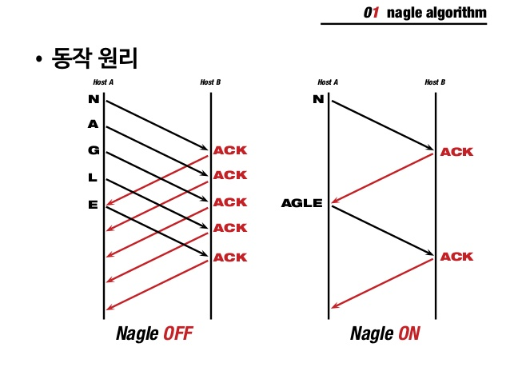

- Game Server Programming 1
- WSA 소켓 에러 정리
- 도메인(DNS Server)
- 홀 펀칭(NAT 투과)
OSI 7계층, TCP/IP 4 계층
OSI 7계층
| Level | 계층 / 기능 |
|---|---|
| Application | 응용 계층 : 사용자가 네트워크에 접근할수 있도록 해주는 계층 |
| Presentation | 표현 계층: 운영체제의 한 부분, 입력 또는 출력되는 데이터를 하나의 표현 형태로 변환한다. 전송 데이터를 서로 이해할수 있도록 한다. |
| Session | 세션 계층 : 통신 세션을 구성하는 계층 , 포트(Port) 연결이라고 할수 있다. 통신장치 간의 상호작용을 설정하고, 유지하고 동기화한다. |
| Transport | 전송 계층: 전체 메시지를 발신지 대 목적지간 제어와 에러를 관리한다. |
| Network | 다중 네트워크 링크에서 패킷을 발신지로부터 목적지로 전달할 책임을 갖는다. |
| Data-Link | 데이터링크 계층: 오류없이 한 장치에서 다른장치로 Frame(비트의 모음)전달하는 역할. 3계층에서 정보를 받아 주소와 제어정보를 시작와 끝에 추가한다.(Mac Address) |
| Physical | 물리적 매체를 통해 Bit 흐름을 전송하기 위해 요구되는 기능들을 조정한다. |
TCP/IP 4 계층
| 레벨 | 계층 / 기능 |
|---|---|
| Application | 응용 계층 : OSI 의 5,6,7 계층이 해당된다. TCP/IP 기반의 응용프로그램 구분할떄 사용된다. |
| Transport | 전송 계층: OSI의 4계층. 통신 노드간의 연결 제어. 자료 송수신을 담당한다. |
| Internet | 인터넷 계층 : OSI 의 3계층. 통신 노드 간의 IP 패킷을 전송하는 기능 및 라우팅 기능을 담당한다. |
| Network Interface | 네트워크 인터페이스 계층: OSI 7계층의 1,2 계층. CSMA/CD, MAC, LAN, X.25 등 전송에 사용된다. |
TCP/UDP의 차이
UDP(User Diagram Protocal)
1 | 경량 프로토콜로써 데이터를 포장하여 호스트의 어떤 포트에서 다른 호스트의 또 어떤 포트로 전달하는데 쓴다. |
- 딱 헤더만 있으면 된다.
- 비 신뢰성
- 릴 라이어블 UDP(우리가 만든다.)를 만든다. -> UDP는 빠른데 안가면 다시 가게 만든다.
- 1:1, 1:M, N:M
- Datagram
- 순서 보장하지 않음.
TCP(Transmission Control Protocal)
1 | 양쪽 호스트 사이에 연결을 계속 유지한 채로 신뢰성 있게 데이터의 스트림을 주고 받을수 있다. |
- 홀 펀칭이 힘들다.
- 오류 확인, 상태 플래그
- 신뢰성(Reliable)
- 1:1
- Stream
- 순서 보장
Capsulation and UnCapsulation(네트워크 흐름)

TCP Review
Nagle Algorithm
패킷의 크기를 최대 세그먼트 길이에 가능한 한 가깝게 맞추어 네트워크 혼잡을 줄이는 기법.
이미 전송 중인(ACK을 아직 못받음) 데이터가 있을때 이후 보낼 예정인 데이터는 쌓아두는데, 쌓인 양이 한계치를 넘어서면 그때 세그먼트로 만들어 보낸다. 이때 한계치는 최대 세그먼트 길이나 혼잡 제어 원도 중 작은것으로 한다.

1 | // 기본적으로 TCP에서는 네이글이 ON이 되어있음 |
TCP Disconnect 감지
유령세션
1 | 서버와 클라이언트가 둘다 ESTABLISTED 상태가 되었을때, 비정상적으로 끊겼을 경우, 무한히 대기하게 된다. 물리적인 원인으로 데이터 전송이 늦어진건지, 네트워크 연결에 문제가 있는건지 알수 없다. 이를 해결하기 위해서 Keepalive와 heartbeat를 쓰면된다. |
KeepALive
1 | 소켓에 자체적으로 HeartBeat 검사. 일정 시간을 설정한 다음 그 시간을 넘으면 검사 패킷을 보내고 일정 이상 응답이 오지 않으면 연결 종료 |
HeartBeat
1 | 심장 박동 처럼 일정 주기로 서버와 클라이언트가 패킷을 주고 받으면서 서로 살아있는지 검사하는 방법. |
소켓 옵션
SO_KEEPALIVE
1 | 소켓 자체에서 연결 여부를 확인한다. |
1 | bool optval = TRUE; |
SO_LINGER
1 | 소켓 송신 버퍼에 미전송 데이터가 있을때 CloseSocket() 함수의 리턴 지연 시간을 제어할수 있다. LINGER 옵션은 TCP 소켓에만 사용할수 있다. UDP는 프로토콜 수준에서 정상 종료와 강제 종료 개념을 제공하지 않기 때문이다. |
1 | LINGER optval; |
| Linger(l_onoff) | Linger(l_linger) | closesocket 함수 동작 |
|---|---|---|
| 0 | 사용안함 | 기본동작 |
| 1 | 0 | 곧바로 리턴후, TCP 강제종료 |
| 2 | 양수 | 송신버퍼 데이터 모두 전송후 정상 종료 (실패시 강제 종료와 버퍼삭제) |
closesocket()
- 소켓을 닫고 할당한 소켓 자원을 반환한다. closesocket 함수 리턴 후에는 해당 소켓을 통신에 사용할수 없다.
- TCP 수준에서 연결 종료 절차(4 Way HandShake
)을 시작한다.
shutdown()
| 옵션 | 기능 |
|---|---|
| SD_RECEIVE | 소켓에 대해 데이터 수신이 금지된다. (실제로는 Recv 함수 호출시 자동 에러 호출한다.) |
| SD_SEND | 소켓에 대해 데이터 송신이 금지된다. |
| SD_BOTH | 소켓에 대해 데이터 송수신이 금지된다. |
1 | SD_SEND를 옵션을 사용할 경우, 상대편에 FIN 패킷을 보내면서 정상적 종료진행(4 Way HandShake)로 들어간다. 하지만 shutdown은 한쪽 방향 연결만 끊는다.(클라와 서버 Shutdown 함수가 필요하다.) |
SO_SNDBUF, SO_REVBUF
1 | 운영체제가 소켓에 할당하는 송신버퍼와 수신버퍼의 크기를 변경할수 있다. |
SO_SNDTIMEO, SO_RCVTIMEO
1 | socket() 함수로 만든 소켓은 블로킹 소켓이기 때문에, 데이터 전송 함수 호출 시 조건이 만족되지 않으면 무한정 블록된다. |
1 | int optval = 3000; // 3초 |
SO_REUSEADDR
1 | 현재 사용중인 IP주소와 포트번호를 재사용한다. |
TCP Connect(3 Way HandShake)
1 | TCP/IP프로토콜을 이용해서 통신을 하는 응용프로그램이 데이터를 전송하기 전에 |

GraceFul Shutdown(4 Way HandShake)
1 | 우아한 종료(데이터의 유실없이 안전히 연결 종료) |

1 | TIME_WAIT은 먼저 종료를 시작한 쪽에서 생긴다. |
I/O Event Notification Modelr
Synchronous
1 | 작업을 요청한 후 해당 작업의 결과가 나올때까지 기다린뒤 처리한다. |
ASynchronous
1 | 작업을 요청해 놓은뒤, 해당 작업이 완료되면 그 때 완료되었음을 통지 받고 그때 따른 처리를 한다. |
Blocking
1 | I/O 작업에서 Blocking으로 동작할 경우 해당 I/O가 끝날때 까지 대기해야된다. |
NonBlocking
1 | 작업을 완료할수 있다면 완료하고 그렇지 않는다면 바로 리턴해 버린다. |
1 | ULONG isNonBlocking = 1; |
1 | 논블록킹 으로 처리할경우, 처리를 하더라도 실패할수 있는데 WSAWOULDBLOCK은 오류에 해당하지 않는다. |
I/O Event 통지 모델이 필요한 이유
1 | 이벤트 통지 모델을 이용하면 Thread 갯수를 훨씬 줄일수 있으며, 동시 접속자가 많을 수록 이벤트 통지 모델을 이용하는 편이 성능이 좋다. |
SELECT 방식
POSIX 표준
1 | SELECT는 이벤트 별로 감시할 소켓들 등록(FD_SET)하고, 등록된 소켓에 뭔가 이벤트가 발생했을 경우, 그걸 확인하는 방식으로 동작한다. |
장단점
1 | 지원하는 OS가 많아 이식성이 좋다.(POSIX 표준) |
SELECT 모델의 이벤트 통지 방식
1 | Event Loop를 통해 매번 소켓의 상태를 확인한뒤 처리를 하기 때문에 동기 방식이다. |
Windows I/O 통지 모델
WSAASyncSelect
1 | 특정 소켓에 통지 받을 이벤트와 통지 받을때 사용할 메세지를 지정해 주면 이벤트가 생길때 메세지 큐를 사용해 윈도우 메세지의 현태로 통지한다. |
Overlapped I/O CallBack
1 | WSASend, WSARecv를 할때, Overlapped 구조체를 통해 IO를 중첩할수 있다. |
장단점
1 | 사용자가 지정한 버퍼로 바로 복사가 일어나기 때문에 데이터 복사 비용이 줄어든다. |
WSA 소켓 에러 정리
WSA_WOULDBLOCK
1 | WOULDBLOCK은 Data 를 다 보내지 못했다는 의미 |
WSA_IO_PENDING
1 | 비동기 입출력에서 나온다. |
도메인(DNS Server)
1 | 최상위 DNS 서버 IP는 고정 |
DDNS (Dynamic DNS)
1 | 엄청 잘 변하는 유동 IP를 DNS 한다. |